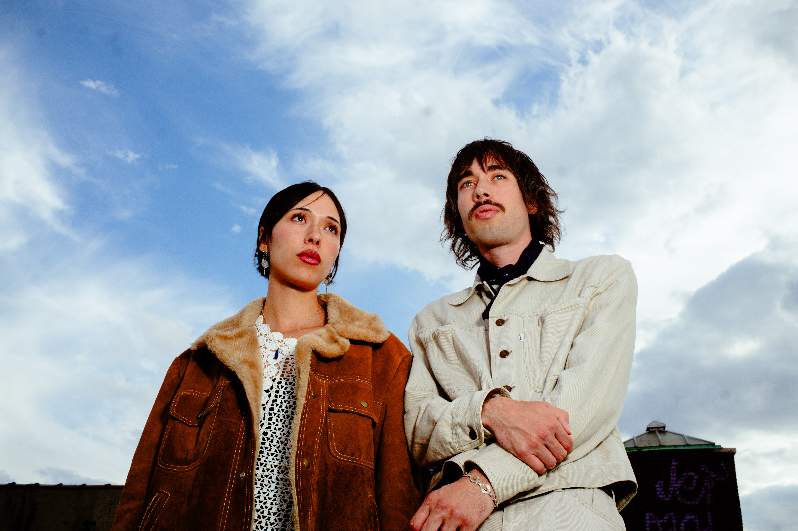
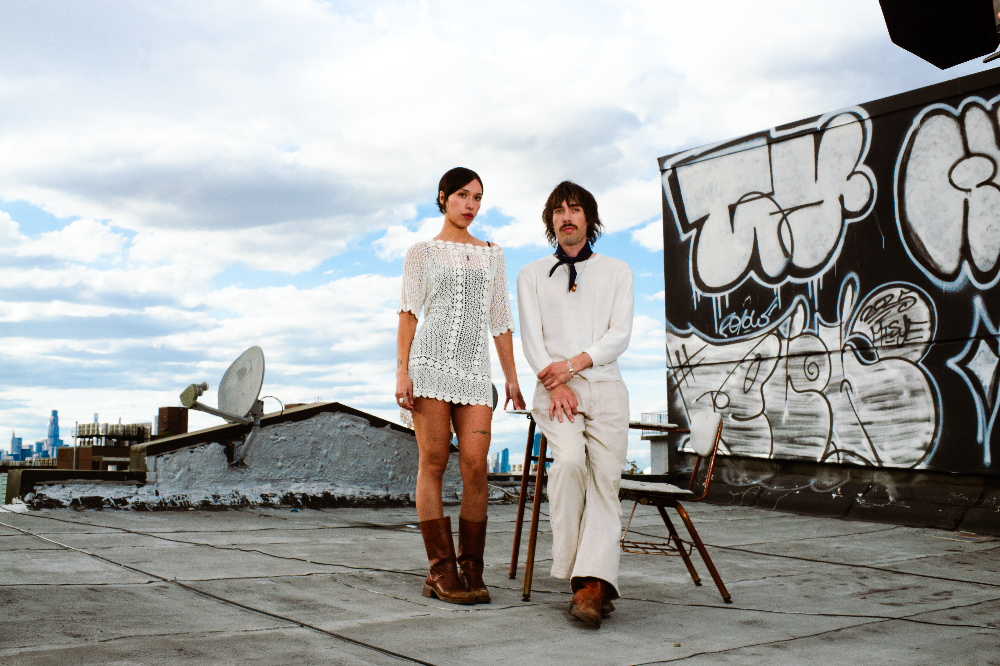
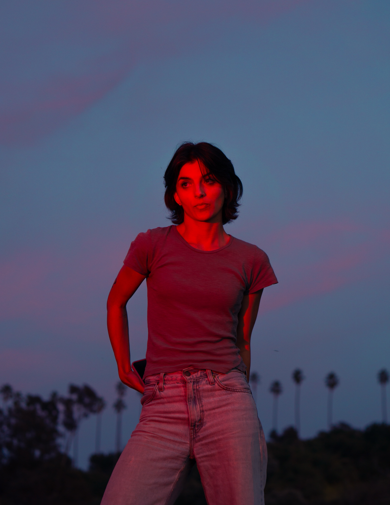
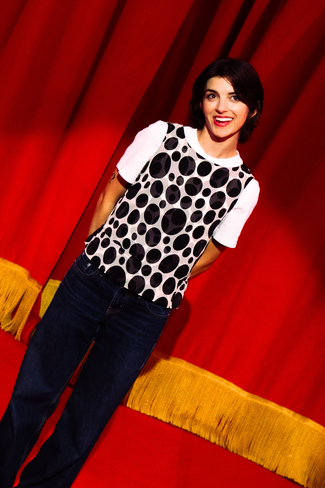
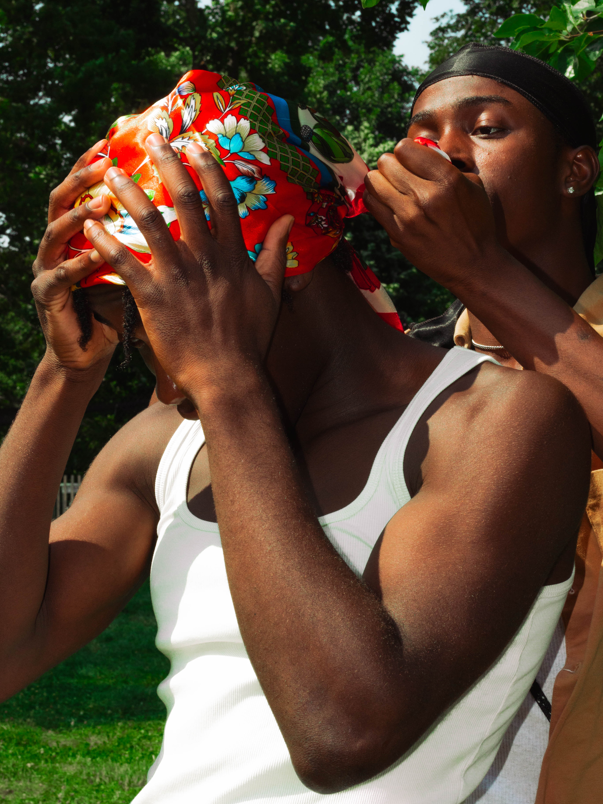
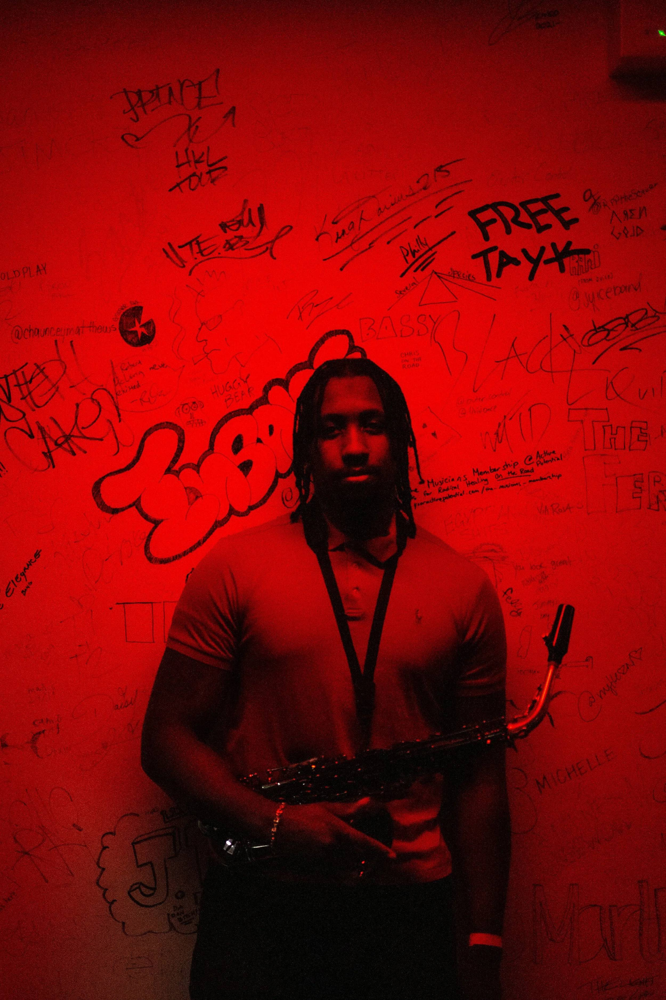
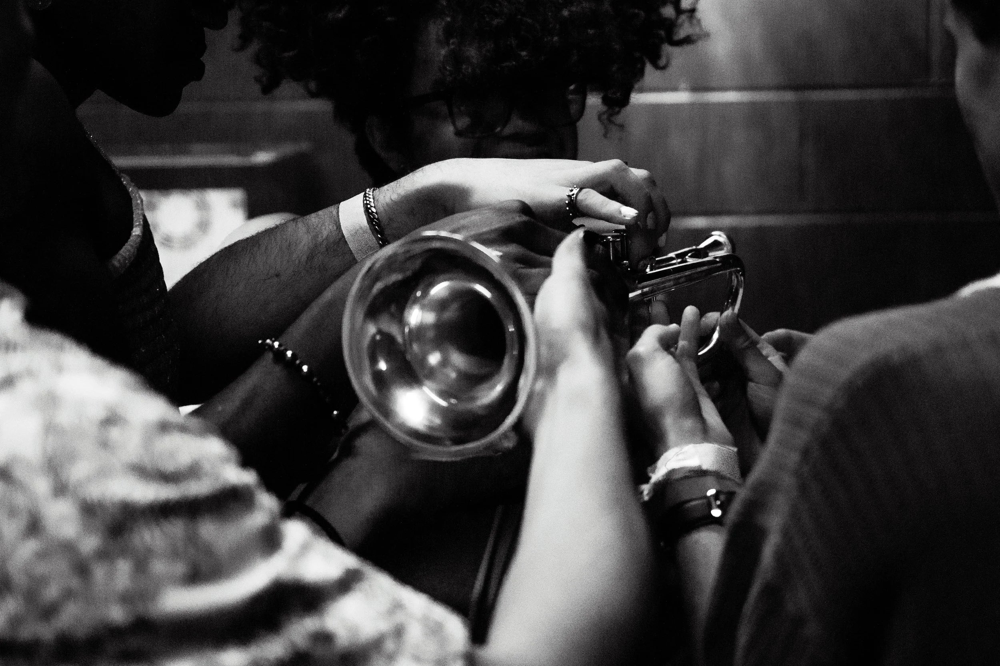
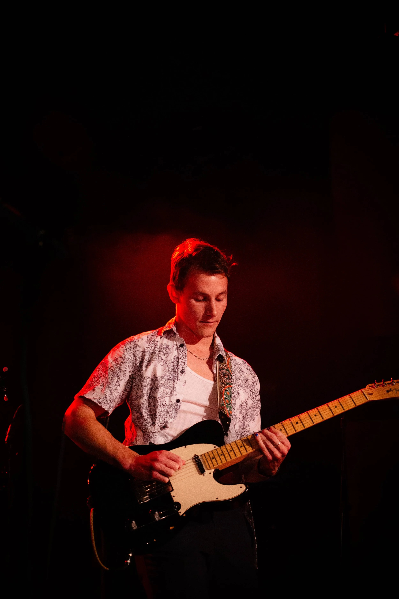
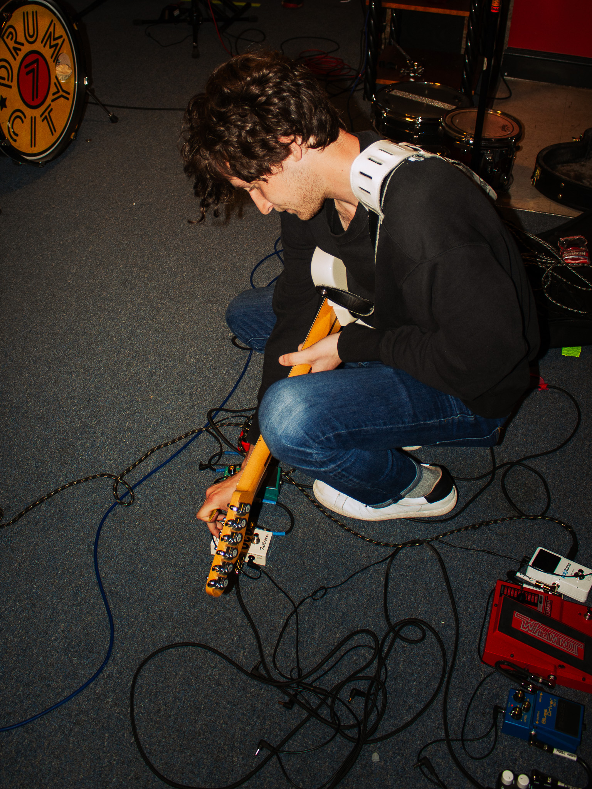
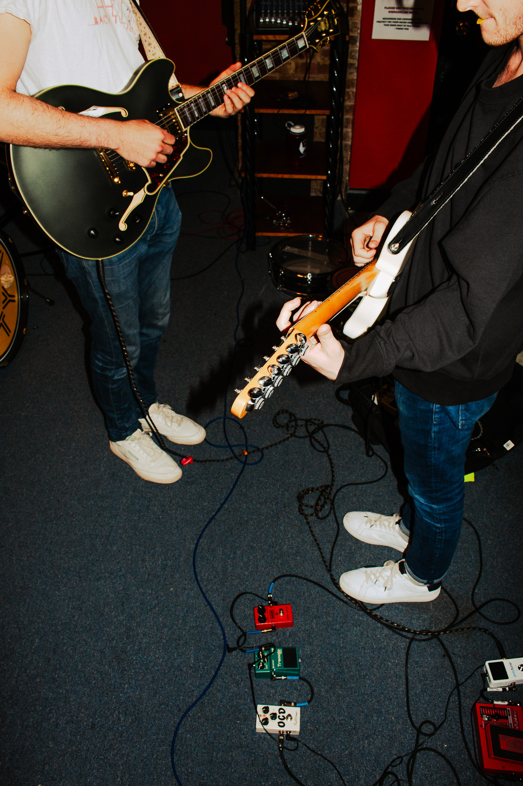

People
The Wildmans
Bushwick, May 2026


McKenna Thurber
Los Angeles, March 2026


Franck and Gene
Prospect Park, May 2024

Cabaret
Georgetown, May 2022



Back to Yours
Adams Morgan, April 2021

